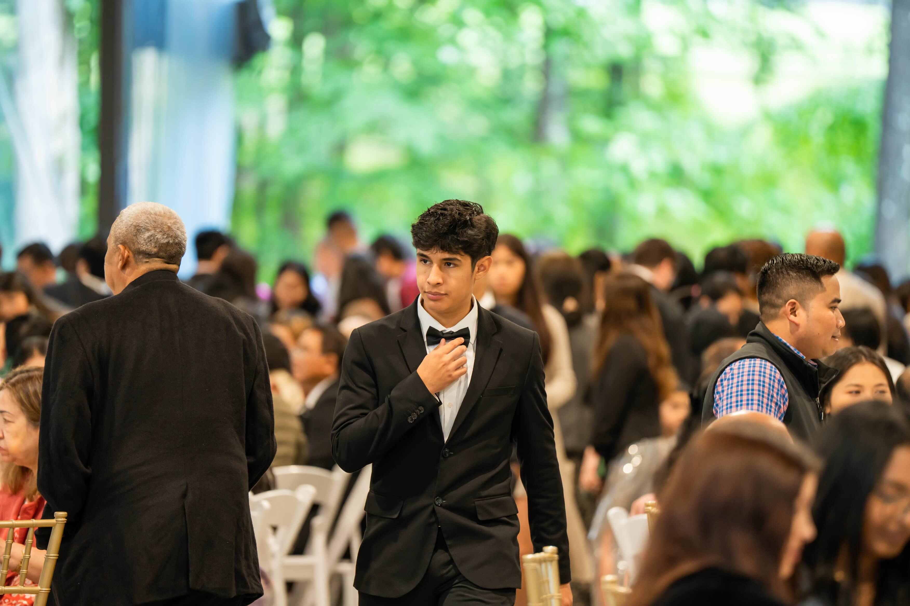

Julio Antinozzi

Computer Science || Cybersecurity || Soccer Player
I'm an avid Peruvian computer scientist and the first in my family to pursue this path. As a creative and driven student in both cybersecurity and computer science, I’m always eager to learn and explore new ideas. I’m passionate about solving problems, building innovative solutions, and staying ahead in a constantly evolving tech landscape. Whether I’m diving into code, collaborating on a project, or tackling a security challenge, I bring curiosity, resilience, and a love for technology to everything I do. I’m always happy to be here and excited for what comes next.